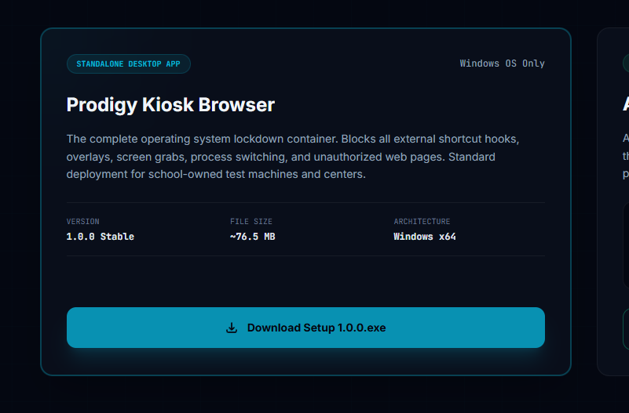

Prodigy Browser is a hardened kiosk framework designed specifically for high-stakes digital exams. It disables OS-level shortcuts, blocks screenshot capture tools, terminates local AI processes, and restricts exam content exclusively to safe whitelist domains.
We replaced generic software rules with raw low-level operating system controls. Here is how Prodigy Browser enforces security.
Standard software blockers check active windows, which is easily bypassed. Prodigy Browser registers low-level Win32 hooks that intercept key sequences directly at the OS kernel level. Disables Alt+Tab, Win Key, PrintScreen, and system access inputs, rendering desktop switching impossible.
Prevents students from using screen captures, recording software, or remote desktops (like Discord, Zoom, or TeamViewer). Leveraging system-level window capture properties, the browser context displays as a flat black block to all external capturing tools while remaining fully visible to the student.
Protects assessment integrity by blocking requests to over 50+ generative AI domains (including ChatGPT, Claude, Gemini, and local LLM backends). The browser validates outgoing packet resolution and automatically blocks access, redirecting unauthorized tabs immediately.
Follow this visual, step-by-step walkthrough to deploy and configure the Secure Exam Browser on Windows 10/11 machines.

Download the installer bundle (Prodigy Browser Setup 1.0.0.exe) from the download section. There are no secondary runtime dependencies.
Deploy the kiosk client directly on test machines, or distribute the helper extension to student browsers.
The complete operating system lockdown container. Blocks all external shortcut hooks, overlays, screen grabs, process switching, and unauthorized web pages. Standard deployment for school-owned test machines and centers.
A lightweight extension for Google Chrome or Microsoft Edge that locks focus to the exam window and monitors navigation paths. Ideal for BYOD browser exams.
chrome://extensionsLearn more about the security frameworks, performance limits, and system audits built into our engine.
Technical slideshows and document summaries are available. Use the resource list to switch context and preview layout details.
Answers to architectural and troubleshooting questions regarding the Kiosk client.